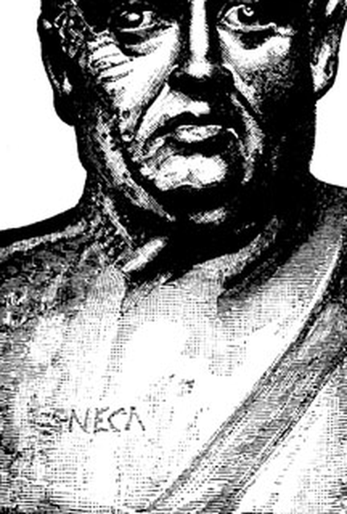

Portrait n°33 - le stoïcien qui écrivait une lettre par jour, jusqu'à la dernière
Œuvre de fiction radiophonique et biographique à caractère historique et patrimonial. Les faits présentés dans cet article sont réels et sourcés ; l'entretien est une reconstitution imaginée.

Sénèque - L'art de remplir ses journées, épisode n°33 - durée de l'entretien à venir
🎧 Télécharger l'audio ·
🖼️ Pochette de l'épisode
Au fond d'une cour de Rome, derrière deux vestibules, un homme de plus de soixante ans travaille dans sa bibliothèque. Des volumes, un stylet, un paquet de lettres à moitié liées. Il vient de poser la plume : une nouvelle vient d'arriver, et elle ne lui plaît pas. Cet homme est Lucius Annaeus Seneca, que le monde romain appelle Sénèque. Nous allons lui demander comment s'organiser dans son temps.
Exilé huit ans en Corse, précepteur de Néron, condamné à mort par lui : Sénèque a passé sa vie à compter. Sa réponse tient dans un geste plutôt que dans une doctrine - découper la journée, ne jamais laisser un jour sans un travail fini.
La scène est tendue : nous sommes au printemps de l'an 65, quelques semaines avant la mort ordonnée de Sénèque. Néron est au pouvoir, et c'est un homme qui travaille, dans une pièce où rien n'est urgent sauf ce qui vient d'arriver.
Un peu plus loin dans la saison, la conjuration de Pison éclate, et Sénèque est mis en cause. L'entretien ne le présente pas comme un conspirateur : l'accusation est réelle, la preuve formelle de son implication, non. Il est appelé, entendu, puis condamné à mourir.
C'est donc un stoïcien en situation : pas un philosophe de cabinet, mais un homme de cour qui a perdu sa place et qui le sait. Sa philosophie n'est pas un discours sur le temps ; c'est une méthode pour remplir le temps qui reste, jour après jour.
Lucius Annaeus Seneca naît à Cordoue, en Espagne, dans les années qui précèdent notre ère. Deuxième fils de Sénèque le Rhéteur, il porte le métier de son père : l'éloquence. Toute la famille, à commencer par son grand-père Marcus Annaeus Seneca, vivait de ce talent ; elle était d'origine italienne et installée en Bétique.
Le père, célèbre pour sa parole, lui apprend à parler avant de lui apprendre à se taire. Mais une autre rencontre le détourne de l'éloquence : le stoïcien Attalus, à Rome, lui enseigne autre chose. Non pas à convaincre les autres, mais à se convaincre lui-même. C'est là que se situe la bascule de sa vie.
Car le père veut une ascèse plus dure. Il l'envoie chez un pythagoricien, Sotion, qui prône l'abstinence et la discipline. L'expérience dérape, et le père finit par l'en retirer, de peur que ce mode de vie n'achève son fils. L'ascétisme mal placé, dit l'entretien, tue aussi sûrement que la licence.
Vers l'an 26, le père envoie Lucius Annaeus Seneca en Égypte, en secret, sur un exil déguisé en voyage d'études. Il y restera cinq ans, jusqu'à son retour à Rome en 31, et y pratique un régime plus dur encore que celui de Sotion. Il en revient, dit l'entretien, en homme et non en martyr. C'est aussi le moment où se fixe une conviction que l'épisode résume : la vie n'est pas un examen. À son retour : questeur en 37.
Retenons cette ligne : Sénèque n'a pas inventé le stoïcisme. Zénon de Kition, qui vécut au quatrième siècle avant notre ère, a fondé à Athènes l'école dont il est l'un des derniers porte-voix à Rome. Face à lui, Épicure est l'autre grand repère : le bonheur n'est pas le plaisir à la manière des épicuriens, mais une vie conforme à la nature.
En 41, Caligula vient d'être assassiné. Sénèque est accusé par Messaline d'avoir été l'amant de Julia Livilla, la sœur de Caligula. Il n'était pas son amant, et lui-même le dit : on ne cherchait pas une vérité, on cherchait un homme à éloigner. Il est exilé en Corse pour huit ans, de 41 à 48. C'est la plus longue pause imposée de sa vie, et c'est une île, pas une maison.
De cette période datent les trois Consolations. La première s'adresse à sa mère Helvia, qui souffre d'avoir un fils exilé. La deuxième à Marcia, qui pleure son enfant. La troisième à Polybe, affranchi de Claude, qui a perdu son frère et connu la disgrace. Trois personnes qui souffraient, et à qui il ne pouvait rien apporter sinon une raison de tenir.
Ce point est essentiel, et l'entretien y insiste : les Consolations ne sont pas des lettres à un correspondant, et elles ne préfigurent pas encore les Lettres à Lucilius. Mais elles établissent une chose qui traversera tout le reste de sa vie - qu'on peut écrire à quelqu'un qui est à des centaines de kilomètres, de l'autre côté de la mer, et que cela compte.
En 48, Messaline meurt. Sénèque est rappelé à Rome à la faveur d'Agrippine, qui le place comme précepteur du jeune Néron. C'est un poste de courtisan, et l'entretien le dit sans fard : un homme que l'on avait écarté de tout, à qui l'on avait vu dans l'exil des pages qui plaisaient. Il épousa en 49 la fille de Paulinus.
Le métier était de tenir la balance entre un prince et son palais, et il l'a exercé seize ans. À 59, Agrippine est assassinée ; à 62, Burrus, son collègue, meurt ; l'empereur devient autre chose. Sénèque se retire de la cour et écrit davantage pendant ces années-là qu'en aucune autre.
En 64, il est à Pompéi et à Naples quand le grand incendie ravage Rome. Sur ce qu'il a pensé de l'incendie, la prudence s'impose : la chose simple est qu'il avait déjà écrit la moitié de ses Lettres, et qu'il n'a pas cessé d'écrire quand les flammes sont sorties. Quand le monde brûle, le mieux que l'on puisse faire est de tenir sa tâche.
En 49, l'année de son mariage, Sénèque écrit un livre : De la brièveté de la vie, adressé à Paulinus, son beau-père. Le titre est une provocation, et l'entretien en fait un renversement. La vie n'est pas trop courte : c'est le nombre d'années que nous perdons qui la rend longue. Nous ne manquons pas de temps, nous gaspillons notre temps en occupations stériles, et nous appelons cela vivre.
La thèse, telle que le Larousse du monde des littératures la résume : la vie est en réalité trop longue quand on la perd en occupations stériles. Il ne s'agit pas de courir, mais de faire un examen, et des plus sévères. La vie est courte pour qui la gaspille, et une éternité pour qui sait enfin s'en servir.
Le temps ne se compte pas en années, il se compte en usage. Si l'on ne fait pas attention à ce que l'on fait de chaque journée, on découvre au bout du compte que l'on n'a pas vécu, mais que l'on a été employé. C'est le résumé de la méthode de l'épisode, et cela a une cible : un homme comme Paulinus, dont la fortune lui coûtait déjà des années entières.
En 63, Sénèque commence les Lettres à Lucilius. Le recueil compte 124 lettres, rédigées sur plus de deux ans, jusqu'en 65. Le destinataire est Lucilius Junior, un chevalier de l'ordre équestre que Néron a installé en Sicile comme procurateur. Ils ne se sont pas rencontrés à Rome : les lettres traversent la mer.
Ce qui organise le recueil, c'est un principe rarement explicité : un incident par lettre. Lucilius écrit qu'il a vu un homme se plaindre de la pluie, ou qu'il a croisé un vieillard qui se plaint de son âge ; Sénèque répond sur ce point précis, sans faire cours. Il y a des lettres sur le bruit, sur la mort d'un proche, sur un banquet ennuyeux, sur un livre. LAROUSSE parle de « jour après jour » et des « menus incidents de sa vie quotidienne ».
Il ne médite pas sur le temps : il le découpe. À chaque fois, une unité de temps, un incident, une réponse. Ces lettres ne sont pas des traités : ce sont des unités de travail.
C'est le point où l'épisode croise une méthode très contemporaine. La journaliste lui demande s'il est l'ancêtre antique de la méthode Pomodoro, qui consiste à découper la journée en blocs courts et à les remplir, avec des pauses. La réponse est honnête : je ne connais pas ce nom, et je m'en méfierais : je n'ai rien inventé.
Ce qu'il revendique, c'est la pratique et non la méthode. On écrit par unités et non par inspiration ; on répond à ce qui est sur la table plutôt que de songer au lendemain. Il n'avait pas de montre, mais il avait des incidents : une lettre par jour, ou presque, et le reste pour la lecture et les ouvrages de fond. Sa discipline : ne jamais laisser un jour sans un travail fini.
La lettre 33 montre le chemin qu'il a lui-même parcouru. Jusque-là, il avait besoin d'appuis, d'autorités, de noms derrière chaque idée ; il y dit qu'il faut prendre les écoles entières, non des sentences détachées, et que chez nous nul n'est maître : chacun se revendique à lui-même - « We are not under a king: each man claims himself for himself », dans la traduction de Gummere. Le temps donné aux autorités est pris sur sa propre vie.
Deux autres lettres montrent la même exigence. Dans la lettre 2, il dit aimer à passer dans le camp adverse, non comme transfuge, mais comme éclaireur. Dans les lettres 9 et 10, Stilpon de Mégare, qui perdit sa femme, ses enfants, sa maison et sa patrie, sort de la ville en criant que tous ses biens sont avec lui ; Cratès sert d'avertissement inverse.
La lettre 56 est l'une des plus connues du recueil, et elle porte sur le bruit. La question qu'elle pose est simple, et sa réponse ne l'est pas : à quoi bon le silence d'une région entière si les passions grondent à l'intérieur ? La formule de Gummere est « For of what benefit is a quiet neighbourhood, if our emotions are in an uproar? »
Ce n'est pas une remarque sur le vacarme des rues - les bains publics bruyants de Rome sont dans le décor - c'est un entraînement. On s'habitue au bruit extérieur, puis on s'aperçoit qu'il n'est qu'un écho : le vrai bruit est en nous, et il parle plus fort que les chars. Le remède, c'est l'attention.
La lettre 70 complète le tableau avec une règle de gestion plus froide. Il faut rendre sa vie acceptable aux autres, et sa mort à soi seul : « Every man ought to make his life acceptable to others besides himself, but his death to himself alone. » Pendant que tu vis, tu es une donnée publique ; ta mort t'appartient. Ce n'est pas une consolation : on rendra des comptes sur le temps que l'on a eu, pas sur ce que les autres en ont fait.
La dernière lettre est la plus difficile. En 65, la conjuration de Pison. Sénèque est accusé, et il n'affirme pas avoir trahi : son implication n'est pas formellement prouvée, et il refuse de jouer au martyr qu'il n'a pas été. Néron le convoque et lui demande de régler ses affaires. Il ouvre ses veines. Il meurt à Rome le 12 avril 65.
Sa formulation refuse le drapeau du héros : il ne s'est pas tué par orgueil, il a obéi, parce que c'était encore de sa façon de tenir. Un homme qui a passé sa vie à remplir ses journées termine en obéissant à un ordre. Il a servi seize ans un empereur qui l'a fait mourir ; et même là, sa règle ne lâche pas. La mort est à lui seul, comme il l'écrit dans la lettre 70.
Ce qui reste de lui est bien connu : trois Consolations d'exil, De la brièveté de la vie vers 49, De la vie heureuse vers 58-59, les 124 Lettres à Lucilius entre 63 et 65, et huit tragédies. Dont les dates restent impossibles à déterminer : Sénèque lui-même répond qu'il a écrit par couches et sans laisser de date, et les savants d'aujourd'hui ne peuvent pas mieux. Le corpus senecain compte dix pièces, dont Octavia n'est pas de lui.
Sa manière a été jugée par un empereur et par les philologues. Caligula définissait son style par une image cruelle mais juste, relevée par Suétone : du sable sans mortier (harena sine cementu). Rien ne lie les phrases entre elles, et pourtant l'édifice tient, parce que chaque pierre est posée avec précision. Les philologues parlent de « sublime de l'allusion » : le lecteur doit faire un pas, et ce pas est celui de l'auteur.
En 63, dans la première lettre à Lucilius, il écrit déjà l'essentiel en quelques mots latin : vindica te tibi, revendique ton droit de propriété sur toi-même. C'est sa réponse à la question de la journaliste : une machine calcule, on lui donne des opérations et elle les exécute sans les comprendre ; l'esprit, lui, choisit ce qu'il va exécuter. Ce qu'on ne peut pas construire, c'est un esprit qui ne s'appartient plus.
Sources : Wikipédia FR « Sénèque » ; LAROUSSE, « Dictionnaire mondial des littératures » et notice « Sénèque le Philosophe » ; UNIVERSALIS, « Sénèque » ; Suétone, Vie de Caligula ; WIKISOURCE, Moral Letters to Lucilius (lettres 1, 2, 9, 10, 33, 56 et 70, trad. Gummere).
← Portrait précédent : Ada Lovelace, l'algorithme avant la machine